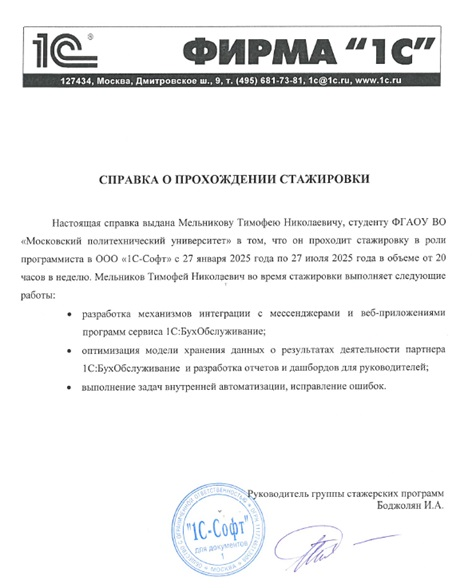

Моя стажировка в 1С-СОФТ
1С-СОФТ - ведущий разработчик программных решений для бизнеса, известный своей платформой 1С:Предприятие.
Разработчик 1С (стажёр)
Участвовал в разработке системы обработки голосовых сообщений для интеграции с мессенджерами.
Основные задачи:
- Разработка модуля обработки аудиосообщений
- Интеграция с Telegram, VK, WhatsApp
- Разработка механизма на 1С:Элемент для хранения медиафайлов
- Работа с механизмом распознавания речи
- Взаимодействие с командой фронтенд-разработчиков
Используемые технологии:
1С:Предприятие 8 1С:Элемент REST API FFmpegПриобретённые навыки
Технические
- Углублённое знание платформы 1С
- Работа с внешними API
- Интеграция разнородных систем
- Оптимизация производительности
Профессиональные
- Работа в команде разработчиков
- Участие в тестировании
- Документирование кода
- Решение реальных бизнес-задач
Подтверждение стажировки
Официальный документ, подтверждающий прохождение стажировки в 1С-СОФТ